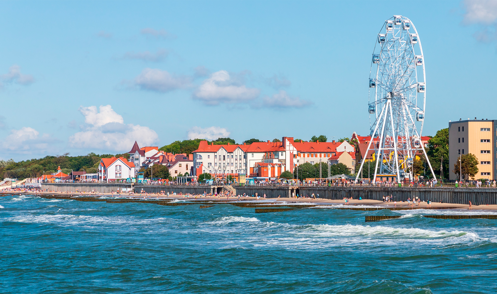
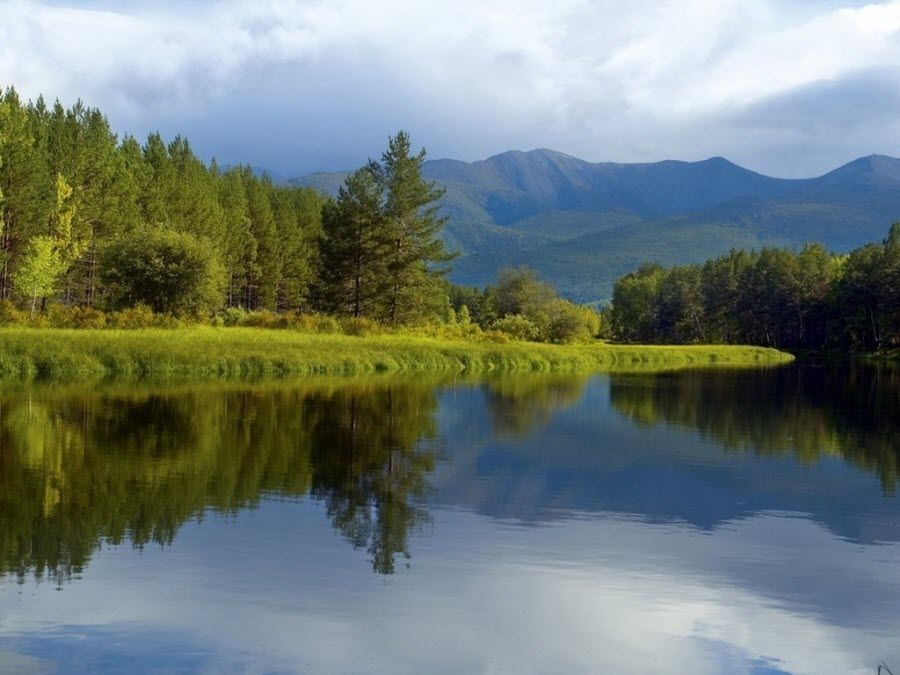
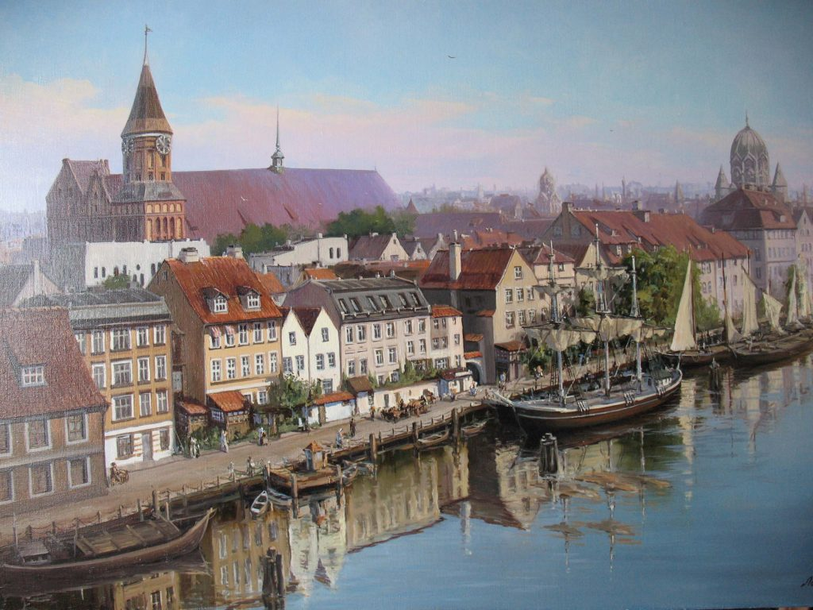
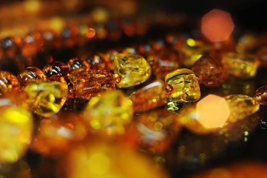
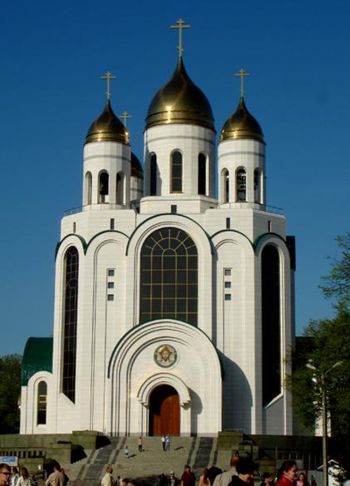
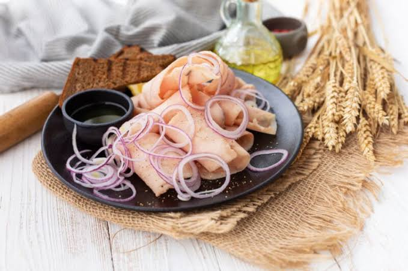

Маршрут по западному краю России: от готического собора на острове Канта через балтийские курорты к дюнам Куршской косы и мосту в Советске, где в 1807 году решалась судьба Европы.
Калининградская область — эксклав: она отделена от остальной России территориями Литвы и Польши и выходит к Балтийскому морю. За восемь веков здесь сменились пруссы, Тевтонский орден, Пруссия и Германия, а с 1946 года это российская земля, где история нескольких эпох видна буквально на каждой улице.
Область граничит с Литвой на севере и востоке и с Польшей на юге, а с запада её омывает Балтийское море. Большая часть территории — равнина, местами ниже уровня моря: польдерные земли в низовьях Немана осушали ещё со времён Тевтонского ордена.
Главные природные богатства побережья — две песчаные косы. Куршская коса длиной 98 км отделяет Куршский залив от моря; её российская часть — национальный парк и объект Всемирного наследия ЮНЕСКО (с 2000 года). Балтийская коса отделяет Калининградский (Вислинский) залив; на ней находится самая западная точка России.
Климат переходный от морского к умеренно-континентальному: мягкая зима, нежаркое лето, много осадков.

Природа побережья

Исторический Калининград
С 1996 года в регионе действует особая экономическая зона — льготный режим, который помогает компенсировать удалённость от основной части страны.

Балтийский янтарь
После 1945 года немецкое население было выселено, и область заново заселили переселенцы со всего Советского Союза — из России, Белоруссии, Украины, Поволжья. Поэтому Калининградская область очень смешанная по происхождению жителей и не имеет собственного старого местного говора.
Большинство верующих — православные. Главный храм — Храм Христа Спасителя на площади Победы, освящённый в 2006 году. Многие бывшие лютеранские и католические кирхи сегодня переданы Русской православной церкви или служат концертными залами: в бывшей кирхе Святого Семейства работает Калининградская филармония. Действуют также католические и лютеранские приходы и синагога, восстановленная в 2018 году на историческом месте.

Храм Христа Спасителя на площади Победы
Узнаваемый облик региона — красный кирпич, черепичные крыши, брусчатка и аллеи старых деревьев вдоль дорог. Здесь сохранилось больше сотни орденских замков, кирх и фортов.

Атмосфера края
Философ, основатель немецкой классической философии. Почти всю жизнь прожил в Кёнигсберге, похоронен у Кафедрального собора.
Писатель-романтик, автор сказки «Щелкунчик и Мышиный король». Родился и учился в Кёнигсберге.
Один из величайших математиков XX века, уроженец Кёнигсберга и выпускник местного университета.
Основоположник литовской художественной литературы, автор поэмы «Времена года». Служил пастором в Тольминкемисе — ныне посёлок Чистые Пруды, где открыт его музей.
Художница и график, родилась в Кёнигсберге. Её работы — о войне, бедности и материнстве.
Не жил здесь, но решил задачу о семи мостах Кёнигсберга — с неё началась теория графов. Мосты стояли вокруг острова Канта.
Мы идём от Средневековья к сегодняшнему дню и от города к морю. Сначала — история Кёнигсберга и его превращение в Калининград, затем янтарь и балтийские курорты, и в конце — природа Куршской косы и граница на Немане. Листайте — карта следует за вами. Лучшее время для поездки — с мая по сентябрь.
Нажмите на карточку, чтобы перевернуть её и узнать ответ.